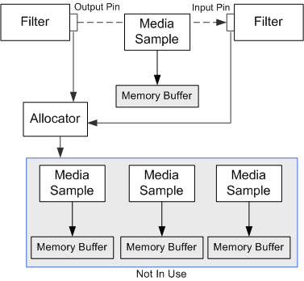

[The feature associated with this page, DirectShow, is a legacy feature. It has been superseded by MediaPlayer, IMFMediaEngine, and Audio/Video Capture in Media Foundation. Those features have been optimized for Windows 10 and Windows 11. Microsoft strongly recommends that new code use MediaPlayer, IMFMediaEngine and Audio/Video Capture in Media Foundation instead of DirectShow, when possible. Microsoft suggests that existing code that uses the legacy APIs be rewritten to use the new APIs if possible.]
When a pin delivers media data to another pin, it does not pass a direct pointer to the memory buffer. Instead, it delivers a pointer to a COM object that manages the memory. This object, called a media sample, exposes the IMediaSample interface. The receiving pin accesses the memory buffer by calling IMediaSample methods, such as IMediaSample::GetPointer, IMediaSample::GetSize, and IMediaSample::GetActualDataLength.
Samples always travel downstream, from output pin to input pin. In the push model, the output pin delivers a sample by calling IMemInputPin::Receive on the input pin. The input pin will either process the data synchronously (that is, completely inside the Receive method), or process it asynchronously on a worker thread. The input pin is allowed to block within the Receive method, if it needs to wait for resources.
Another COM object, called an allocator, is responsible for creating and managing media samples. Allocators expose the IMemAllocator interface. Whenever a filter needs a media sample with an empty buffer, it calls the IMemAllocator::GetBuffer method, which returns a pointer to the sample. Every pin connection shares one allocator. When two pins connect, they decide which filter will provide the allocator. The pins also set properties on the allocator, such as the number of buffers and the size of each buffer. (For details, see How Filters Connect and Negotiating Allocators.)
The following illustration shows the relationships among the allocator, the media samples, and the filter.

Media Sample Reference Counts
An allocator creates a finite pool of samples. At any time, some samples may be in use, while others are available for GetBuffer calls. The allocator uses reference counting to keep track of the samples. The GetBuffer method returns a sample with a reference count of 1. If the reference count goes to zero, the sample goes back into the allocator's pool, where it can be used in the next GetBuffer call. As long as the reference count remains above zero, the sample is not available to GetBuffer. If every sample belonging to the allocator is in use, the GetBuffer method blocks until a sample becomes available.
For example, suppose that an input pin receives a sample. If it processes the sample synchronously, inside the Receive method, it does not increment the reference count. After Receive returns, the output pin releases the sample, the reference count goes to zero, and the sample returns to the allocator's pool. On the other hand, if the input pin processes the sample on a worker thread, it increments the reference count before leaving the Receive method. The reference count is now 2. When the output pin releases the sample, the count goes to 1; the sample does not yet return to the pool. After the worker thread is done with the sample, it calls Release to free the sample. Now the sample returns to the pool.
When a pin receives a sample, it can copy the data to another sample, or it can modify the original sample and deliver that one to the next filter. Potentially, a sample can travel the entire length of the graph, each filter calling AddRef and Release in turn. Therefore, the output pin must never re-use a sample after it calls Receive, because a downstream filter may be using the sample. The output pin must always call GetBuffer to get a new sample.
This mechanism reduces the amount of memory allocation, because filters re-use the same buffers. It also prevents filters from accidentally writing over data that has not been processed, because the allocator maintains a list of available samples.
A filter can use separate allocators for input and output. It might do this if it expands the input data (for example, by decompressing it). If the output is no larger than the input, a filter might process the data in place, without copying it to a new sample. In that case, two or more pin connections can share one allocator.
Committing and Decommitting Allocators
When a filter first creates an allocator, the allocator has not reserved any memory buffers. At this point, any calls to the GetBuffer method will fail. When streaming starts, the output pin calls IMemAllocator::Commit, which commits the allocator, causing it to allocate memory. Pins can now call GetBuffer.
When streaming stops, the pin calls IMemAllocator::Decommit, which decommits the allocator. All subsequent calls to GetBuffer fail until the allocator is committed again. Also, if any calls to GetBuffer are currently blocked waiting for a sample, they immediately return a failure code. The Decommit method may or may not free the memory, depending on the implementation. For example, the CMemAllocator class waits until its destructor method to free memory.
Â
Â